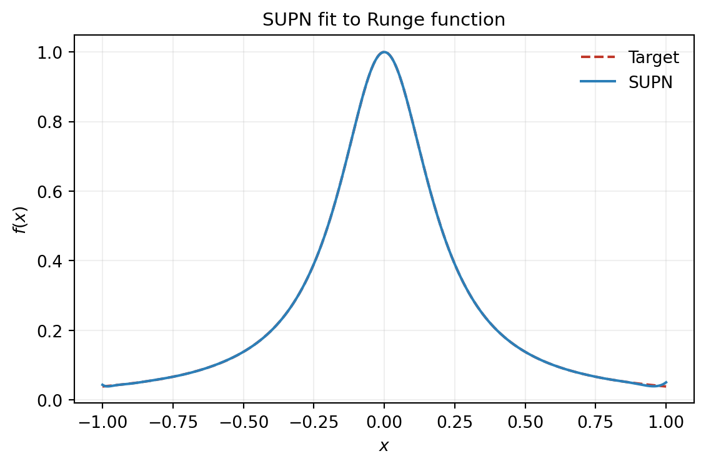
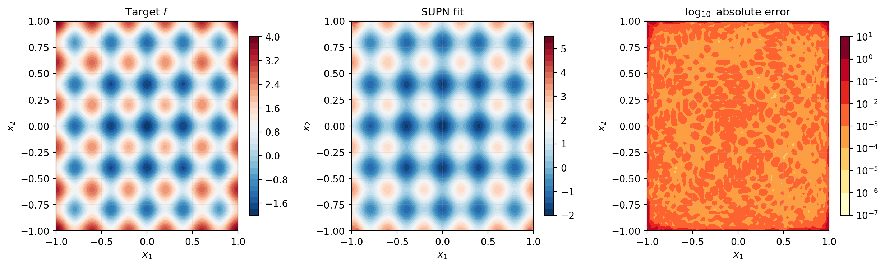
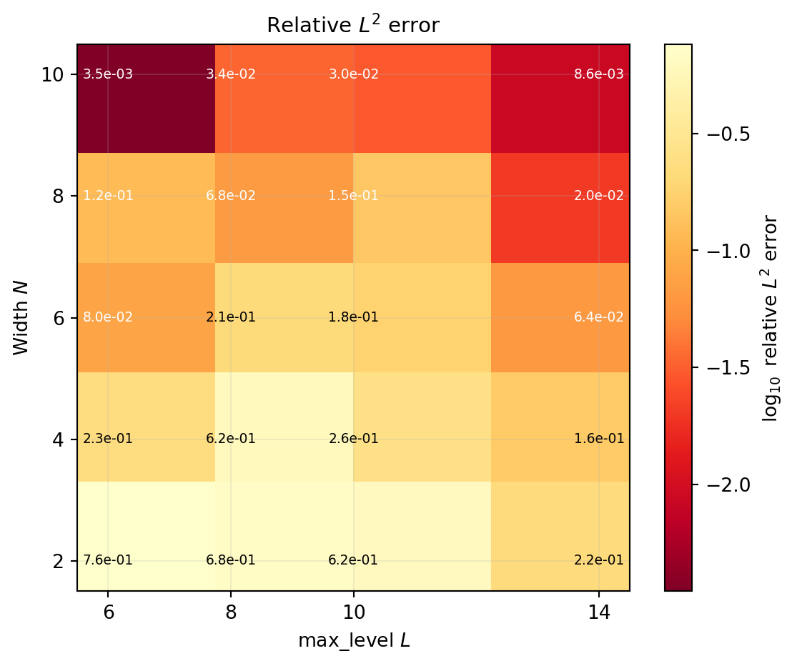

import numpy as np
import matplotlib.pyplot as plt
np.random.seed(42)
from pyapprox.util.backends.numpy import NumpyBkd
from pyapprox.surrogates.supn import create_supn
from pyapprox.surrogates.supn.fitters import SUPNMSEFitter
bkd = NumpyBkd()Building a Shallow Universal Polynomial Network
PyApprox Tutorial Library
Approximate an expensive model with a shallow universal polynomial network (SUPN).
TipDownload Notebook
Learning Objectives
After completing this tutorial, you will be able to:
- Write down the SUPN ansatz and identify its trainable parameters
- Construct a SUPN with
create_supnand inspect its parameter count - Fit a SUPN to training data with
SUPNMSEFitter - Examine convergence as a function of network width \(N\) and polynomial degree on a smooth 1D target
- Apply SUPNs to a 2D target and choose the hyperparameters by sweeping a small grid
Surrogate models replace expensive simulators with cheap approximations — see The Surrogate Modeling Workflow for an introduction. The shallow universal polynomial network (SUPN) (Morrow et al. 2025) is an expressive nonlinear surrogate that borrows from both polynomial chaos expansions (PCEs) and Gaussian processes (GPs). It uses the same Chebyshev basis as a PCE, but feeds linear combinations of that basis through a \(\tanh\) nonlinearity, then takes a final linear combination. The result is an expressive nonlinear surrogate with far fewer trainable parameters than a deep neural network.
The SUPN Ansatz
A SUPN approximates a target function \(f : [-1, 1]^D \to \mathbb{R}^Q\) as
\[ f_{N, \Lambda}(\mathbf{x}) = \sum_{n=1}^{N} c_n \, \tanh\!\left( \sum_{m \in \Lambda} a_{n, m} \, T_m(\mathbf{x}) \right) \]
where \(T_m(\mathbf{x}) = \prod_{d=1}^{D} T_{m_d}(x_d)\) is a product of univariate Chebyshev polynomials of the first kind, \(\Lambda \subset \mathbb{N}_0^D\) is a multi-index set (analogous to the basis index set of a PCE), and \(a_{n, m} \in \mathbb{R}\) and \(c_n \in \mathbb{R}^Q\) are the trainable parameters.
In matrix form, with the \(M = |\Lambda|\) basis functions stacked into a vector \(B(\mathbf{x}) \in \mathbb{R}^M\):
\[ f(\mathbf{x}) = C \, \tanh\!\big( A \, B(\mathbf{x}) \big), \]
where \(A \in \mathbb{R}^{N \times M}\) and \(C \in \mathbb{R}^{Q \times N}\). The total parameter count is
\[ P = N M + Q N. \]
The architecture has three stages:
- Chebyshev lift. \(\mathbf{x} \mapsto B(\mathbf{x})\) replaces the raw input with a polynomial feature vector. This is the role played by the early hidden layers of an MLP, but pre-specified rather than learned.
- Hidden layer. A linear map followed by a \(\tanh\) nonlinearity, exactly as in a single-layer MLP.
- Linear readout. A linear combination of the \(N\) hidden units produces the output.
NoteConnection to PCE
A polynomial chaos expansion uses the same Chebyshev basis \(\{T_m\}_{m \in \Lambda}\) but combines it linearly: \(f_{\text{PCE}}(\mathbf{x}) = \sum_m \alpha_m T_m(\mathbf{x})\). A SUPN feeds linear combinations of the same basis through a \(\tanh\) nonlinearity, then takes a final linear combination. When the inner sum is small, \(\tanh(y) \approx y\) and the SUPN behaves like a linear combination of PCEs; when the sum is large the nonlinearity dominates and the network gains expressivity beyond what any single PCE in the same basis can achieve.
Setup
Inspecting the Architecture
Before fitting anything, let’s build a small SUPN and look at its structure.
supn = create_supn(nvars=1, width=5, max_level=4, bkd=bkd)
N = supn.width()
M = supn.nterms()
P = supn.nparams()
print(f"Width N : {N}")
print(f"Number of basis fns : {M}")
print(f"Total parameters P : {P}")Width N : 5
Number of basis fns : 5
Total parameters P : 30The number of basis functions \(M\) includes the constant term \(T_0 \equiv 1\). For a 1D SUPN with max_level=4, the index set is \(\Lambda = \{0, 1, 2, 3, 4\}\) so \(M = 5\). The parameter count is \(P = NM + QN\): five hidden units, each carrying five Chebyshev coefficients (\(25\) entries of \(A\)), plus one output weight per hidden unit (\(5\) entries of \(C\)), giving \(P = 30\).
NoteSampling rule of thumb
For smooth 1D targets, \(K \approx 2P\) random uniform training samples is enough to land in a clean training regime. For harder or higher-dimensional targets, low-discrepancy sequences (e.g. Sobol) with \(K \approx 4P\) provide better coverage than random sampling at the same budget. If the loss landscape feels noisy or optimization stalls, increasing the sample ratio or improving the sample design usually helps.
A Smooth 1D Target: Runge’s Function
The Runge function
\[ f(x) = \frac{1}{1 + (cx)^2} \]
with \(c = 5\) is a textbook example of a function that is hard to approximate with naive interpolation. It is, however, infinitely smooth, and we expect SUPNs to converge rapidly on it.
def runge(samples, c=5.0):
return 1.0 / (1.0 + (c * samples)**2)
x_test = np.linspace(-1, 1, 1000).reshape(1, -1)
y_test = runge(x_test)A Single Fit
We start with a single moderately-sized SUPN to demonstrate the full workflow before sweeping over hyperparameters.
supn = create_supn(nvars=1, width=5, max_level=4, bkd=bkd)
P = supn.nparams()
K = 2 * P
x_train = np.random.uniform(-1, 1, K).reshape(1, -1)
y_train = runge(x_train)
fitter = SUPNMSEFitter(bkd)
result = fitter.fit(supn, bkd.asarray(x_train), bkd.asarray(y_train))
fitted = result.surrogate()
y_pred = bkd.to_numpy(fitted(bkd.asarray(x_test)))
rel_l2 = np.linalg.norm(y_pred - y_test) / np.linalg.norm(y_test)
print(f"Parameters P : {P}")
print(f"Training samples K : {K}")
print(f"Converged : {result.converged()}")
print(f"Relative L2 error : {rel_l2:.4e}")Parameters P : 30
Training samples K : 60
Converged : True
Relative L2 error : 2.4358e-03The default fitter chains Adam warm-starting (500 iterations) with trust-region Newton–CG, matching the two-phase training procedure in Morrow et al. (2025). Adam navigates the non-convex loss landscape to a good basin; the second-order optimizer then converges rapidly to a high-accuracy local minimum using analytical gradient and Hessian-vector product.
from pyapprox_tutorials.figures._supn import plot_supn_fit_1d
fig, ax = plt.subplots(figsize=(6, 4))
plot_supn_fit_1d(
x_test.flatten(), y_test.flatten(), y_pred.flatten(), ax,
title="SUPN fit to Runge function",
)
plt.tight_layout()
plt.show()
A 2D Target: Sum of Rastrigin Functions
Let’s move to two dimensions. The 2D Rastrigin sum
\[ f(x, y) = \big(x^2 - \cos(5\pi x)\big) + \big(y^2 - \cos(5\pi y)\big) \]
is oscillatory in each variable and additively separable. SUPNs handle this kind of tensor-structured target well.
def rastrigin_sum(samples):
x, y = samples[0], samples[1]
vals = ((x**2 - np.cos(5 * np.pi * x))
+ (y**2 - np.cos(5 * np.pi * y)))
return vals.reshape(1, -1)We build a 2D test grid:
from pyapprox.interface.functions.plot.plot2d_rectangular import (
meshgrid_samples,
)
X, Y, samples_grid = meshgrid_samples(80, [-1, 1, -1, 1], bkd)
z_true = bkd.to_numpy(rastrigin_sum(bkd.to_numpy(samples_grid))).reshape(
bkd.to_numpy(X).shape
)
X_np, Y_np = bkd.to_numpy(X), bkd.to_numpy(Y)and fit a 2D SUPN.
from scipy.stats.qmc import Sobol
np.random.seed(3)
supn2d = create_supn(nvars=2, width=8, max_level=14, bkd=bkd)
P = supn2d.nparams()
K = 4096
sobol_sampler = Sobol(d=2, scramble=True, seed=42)
x_train = (2.0 * sobol_sampler.random(K) - 1.0).T # (2, K) on [-1,1]^2
y_train = rastrigin_sum(x_train)
fitter_2d = SUPNMSEFitter(bkd)
result_2d = fitter_2d.fit(supn2d, bkd.asarray(x_train), bkd.asarray(y_train))
fitted_2d = result_2d.surrogate()
np.random.seed(99)
x_test_2d = np.random.uniform(-1, 1, (2, 5000))
y_test_2d = rastrigin_sum(x_test_2d)
y_pred_2d = bkd.to_numpy(fitted_2d(bkd.asarray(x_test_2d)))
rel_l2 = np.linalg.norm(y_pred_2d - y_test_2d) / np.linalg.norm(y_test_2d)
print(f"Parameters P : {P}")
print(f"Training samples K : {K} (Sobol sequence)")
print(f"Converged : {result_2d.converged()}")
print(f"Relative L2 error : {rel_l2:.4e}")Parameters P : 968
Training samples K : 4096 (Sobol sequence)
Converged : False
Relative L2 error : 1.5333e-02from pyapprox_tutorials.figures._supn import plot_supn_2d_comparison
z_pred = bkd.to_numpy(
fitted_2d(bkd.asarray(samples_grid))
).reshape(X_np.shape)
fig, axes = plt.subplots(1, 3, figsize=(13, 4))
plot_supn_2d_comparison(X_np, Y_np, z_true, z_pred, axes, fig)
plt.tight_layout()
plt.show()
Choosing \((N, \texttt{max\_level})\)
The two main hyperparameters of a SUPN are the network width \(N\) and the polynomial degree controlling \(|\Lambda|\). To get a feel for their interplay, we sweep both and record the test error.
N_values = [2, 4, 6, 8, 10]
L_values = [6, 8, 10, 14]
err_grid = np.zeros((len(N_values), len(L_values)))
for i, N_val in enumerate(N_values):
for j, L_val in enumerate(L_values):
np.random.seed(i * 100 + j)
supn_ij = create_supn(
nvars=2, width=N_val, max_level=L_val, bkd=bkd,
)
P_ij = supn_ij.nparams()
K_ij = 4 * P_ij
sobol_ij = Sobol(d=2, scramble=True, seed=i * 100 + j)
x_tr = (2.0 * sobol_ij.random(K_ij) - 1.0).T
y_tr = rastrigin_sum(x_tr)
fitter_ij = SUPNMSEFitter(bkd)
result_ij = fitter_ij.fit(
supn_ij, bkd.asarray(x_tr), bkd.asarray(y_tr),
)
fitted_ij = result_ij.surrogate()
y_p = bkd.to_numpy(fitted_ij(bkd.asarray(x_test_2d)))
err_grid[i, j] = (
np.linalg.norm(y_p - y_test_2d) / np.linalg.norm(y_test_2d)
)from pyapprox_tutorials.figures._supn import plot_supn_heatmap
fig, ax = plt.subplots(figsize=(6, 5))
plot_supn_heatmap(err_grid, N_values, L_values, ax)
plt.tight_layout()
plt.show()
The heat-map gives a practical recipe: pick max_level large enough to resolve the variation of the target, then use \(N\) to refine. For oscillatory targets like this one, the polynomial degree is by far the more important knob.
Practical Tips
TipPractical guidance for SUPN training
- For smooth 1D targets, \(K \approx 2P\) random uniform samples often suffices. For harder or higher-dimensional targets, use low-discrepancy sequences (Sobol) with \(K \approx 4P\) for better coverage.
- If the loss plateaus, increase
max_levelbefore increasingwidth. The polynomial degree governs the expressivity of the inner sum, which is usually the limiting factor. - The default fitter chains Adam warm-starting with trust-region Newton–CG. Adam navigates the non-convex landscape to a good basin; the second-order optimizer then converges rapidly. You can customize the optimizer via
fitter.set_optimizer(...). - Multiple random initializations are cheap insurance for difficult targets — refit two or three times and keep the best.
Key Takeaways
- A SUPN is a single-hidden-layer network whose first stage is a fixed Chebyshev polynomial lift; the trainable parameters are the inner coefficients \(a_{n,m}\) and the output weights \(c_n\).
create_supn(nvars, width, max_level, bkd)builds a SUPN; the parameter count is \(P = NM + QN\) where \(M = |\Lambda|\) is the size of the multi-index set.SUPNMSEFittertrains the network with Adam warm-starting followed by trust-region Newton–CG using analytical gradient and Hessian-vector product; checkresult.converged()after fitting.- On smooth targets, SUPN test error decays rapidly with \(P\).
- For a fixed parameter budget, increasing
max_levelusually buys more accuracy than increasingwidth, especially on oscillatory targets.
Exercises
- Width vs degree trade-off. Re-run the heat-map with \(K = 8P\) Sobol training samples instead of \(4P\). Does the optimal \((N, \texttt{max\_level})\) pair change, or just the absolute error level?
- Hyperbolic cross. Pass
pnorm=0.5tocreate_supnto use a hyperbolic-cross index set instead of total-degree. How does the parameter count change at fixedmax_level, and how does the error on the 2D Rastrigin sum compare? - Sample-count sensitivity. For the Runge example at \((N, L) = (4, 6)\), sweep the training-sample multiplier \(K/P \in \{1, 2, 4, 8\}\) and plot the relative \(L^2\) error. Where does the error stop improving?
- Custom optimizer. The default fitter chains
AdamOptimizerwith trust-region Newton–CG. ImportAdamOptimizerandScipyTrustConstrOptimizer, build aChainedOptimizerwithmaxiter=2000for Adam andgtol=1e-10for trust-constr, and pass it tofitter.set_optimizer(...). Does the longer warm-start improve the 2D Rastrigin error?
Next Steps
- Building a Polynomial Chaos Surrogate — the linear cousin of a SUPN; compare fitting cost and accuracy on the same targets.
- Building a Gaussian Process Surrogate — another nonlinear surrogate, with built-in uncertainty quantification.
- Practical PCE Fitting — sample-efficient strategies that transfer to SUPNs.
References
Morrow, Zachary, Michael Penwarden, Brian Chen, Aurya Javeed, Akil Narayan, and John D. Jakeman. 2025. SUPN: Shallow Universal Polynomial Networks. https://arxiv.org/abs/2511.21414.